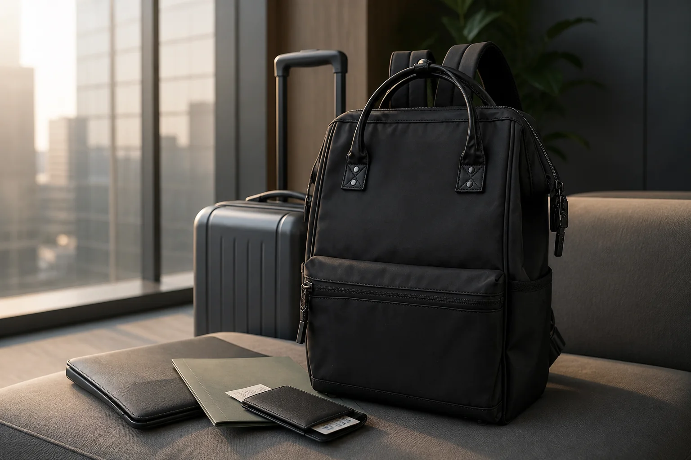

출근과 출장을 함께 쓰는 백팩: 평일과 1박을 잇는 7가지 기준

매일 출근할 때는 단정하지만 갑작스러운 1박 출장에도 대응할 수 있는 백팩을 찾는다면 ‘얼마나 많이 들어가는가’만으로는 부족합니다. 평일에는 부피가 과하지 않고, 출장 날에는 업무 도구와 개인 물품이 섞이지 않아야 합니다. 두 상황의 공통점을 먼저 찾으면 큰 여행 가방과 작은 출근 가방 사이에서 기준을 세우기 쉬워집니다.
1. 평일 짐을 넣고 남는 공간부터 확인하세요
노트북, 충전기, A4 서류, 지갑과 물병처럼 평소 짐을 먼저 넣습니다. 그 상태에서 얇은 상의 한 벌, 작은 세면 파우치와 속옷 파우치가 들어갈 공간이 남는지 확인하세요. 빈 가방의 전체 용량보다 평일 짐을 채운 뒤 남는 모양과 지퍼의 여유가 1박 출장 활용도를 더 잘 보여줍니다.
2. 노트북과 옷은 서로 눌리지 않게 나누세요
출장 중에는 가방을 평소보다 자주 열고 선반이나 바닥에 내려놓게 됩니다. 노트북 수납칸이 옷과 분리되고 기기가 가방 바닥에 직접 닿지 않는지 살펴보세요. 노트북 크기 확인 방법은 노트북 백팩 수납칸 점검표에서 단계별로 볼 수 있습니다.
3. 이동 중 필요한 물건은 한 구역에 모으세요
신분증, 교통카드, 이어폰과 충전 케이블은 열차 좌석이나 대기 공간에서 자주 꺼냅니다. 메인 지퍼를 끝까지 열지 않아도 닿는 포켓이나 작은 파우치 하나에 모아두세요. 반대로 회사 보안카드나 중요한 서류는 입구가 쉽게 열리는 외부 포켓보다 잠금이 확실한 안쪽에 두는 편이 좋습니다.
4. 서류가 휘지 않는 면을 확보하세요
옷과 파우치를 함께 넣으면 A4 파일 모서리가 쉽게 눌릴 수 있습니다. 단단한 파일을 등판과 평행하게 세우고, 둥근 세면 파우치나 신발 주머니가 서류를 누르지 않는지 확인합니다. 종이 자료가 많은 출장이라면 책과 서류 모서리를 지키는 수납법을 활용하세요.
5. 캐리어와 함께 쓸 때의 동선을 확인하세요
캐리어 결합 밴드가 있는 제품이라면 손잡이 폭과 맞는지, 고정했을 때 백팩이 한쪽으로 기울지 않는지 확인합니다. 결합 기능이 없더라도 어깨끈과 옆 스트랩이 바퀴에 늘어지지 않게 정리해야 합니다. 캐리어 없이 이동할 때는 계단과 환승 구간에서 가방이 등에서 크게 흔들리지 않는지가 더 중요합니다.
6. 옷차림과 가방의 실제 부피를 함께 보세요
검정, 차콜, 카키처럼 차분한 색은 여러 출근복과 연결하기 쉽지만 색만으로 비즈니스 인상이 결정되지는 않습니다. 가방을 가득 채웠을 때 앞면이 과하게 불룩해지는지, 재킷을 입고 멨을 때 어깨끈이 옷깃을 밀지 않는지 확인하세요. 평소 옷과의 조합은 백팩 색상 선택 가이드도 도움이 됩니다.
7. 돌아온 날 바로 비울 수 있는 구조를 만드세요
출장 후 옷과 영수증, 충전기를 그대로 두면 다음 출근 날 짐이 무거워집니다. 여행용 파우치를 통째로 꺼내고, 업무 물품만 원래 자리로 돌리는 방식으로 구성하세요. 평일과 출장 짐을 파우치 단위로 분리하면 가방 하나를 두 용도로 전환하기가 쉬워집니다.
출발 전 최종 체크리스트
- 평일 짐을 넣은 뒤 1박 물품이 무리 없이 들어가나요?
- 노트북, 서류와 세면용품이 분리되어 있나요?
- 표와 신분증을 메인 수납칸 없이 꺼낼 수 있나요?
- 지퍼를 닫았을 때 가방 앞면과 바닥이 안정적인가요?
- 캐리어 결합 또는 어깨 착용 상태에서 끈이 늘어지지 않나요?
- 귀가 후 여행용 파우치만 바로 꺼낼 수 있나요?
출장 겸용 백팩은 여행 가방을 작게 만든 제품이 아니라, 업무 흐름을 유지하면서 필요한 하루를 더 담을 수 있는 가방에 가깝습니다. 열차 이동이 많다면 기차 여행 백팩 준비법을 함께 읽고, 실제 제품은 Himawari No.1884 상세 정보에서 크기와 옵션을 확인해 보세요.
참고·안내
- Himawari No.1884 제품 정보
- 용도별 Himawari 가방 찾기
- 대표 이미지는 Himawari No.1884 제품 사진을 참조해 만든 연출 이미지입니다. 실제 수납 구조와 크기는 제품 상세 정보를 확인해 주세요.
자주 묻는 질문
출근용 백팩으로 1박 출장도 가능한가요?
평소 업무 물품을 넣은 뒤 얇은 옷과 세면 파우치가 들어갈 여유가 있고 노트북·서류를 분리할 수 있다면 가능합니다. 출장 짐을 실제로 넣어 지퍼와 착용 균형을 확인하세요.
출장 백팩은 캐리어에 고정되는 기능이 꼭 필요한가요?
캐리어를 자주 함께 쓴다면 결합 밴드가 이동 편의를 높일 수 있습니다. 백팩 단독 이동이 대부분이라면 크기, 어깨끈과 수납 동선을 먼저 살펴보세요.
정장과 함께 멜 백팩은 어떤 모양이 어울리나요?
장식이 많고 적음보다 가방을 채웠을 때 형태가 지나치게 불룩해지지 않는지, 자주 입는 재킷의 색과 크기에 자연스럽게 맞는지 직접 비교하는 것이 좋습니다.